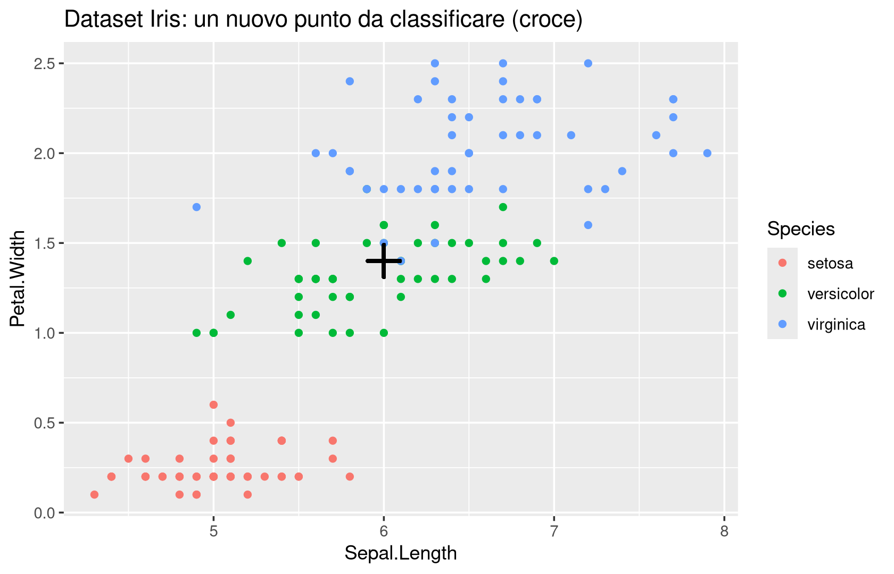
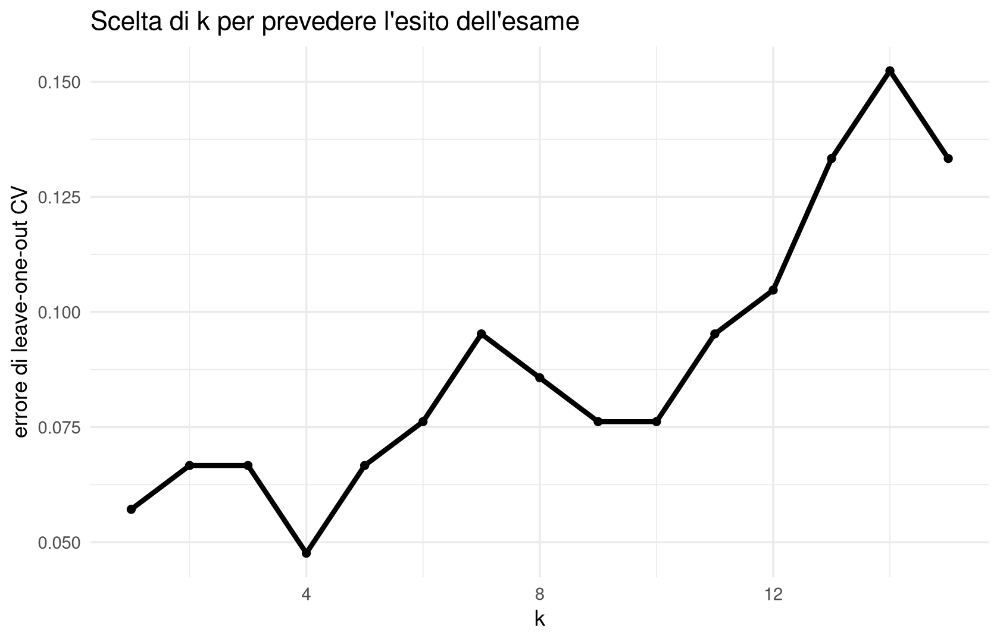

4Classificazione: K-Nearest Neighbors e validazione
4.1 Obiettivi del capitolo
Al termine del capitolo dovresti essere in grado di:
spiegare la differenza tra apprendimento supervisionato e non supervisionato, collegandola a quanto visto nel clustering e nella PCA;
costruire e interpretare un classificatore K-Nearest Neighbors, distinguendo il ruolo di \(k\) da quello della metrica usata;
motivare perché la scala delle variabili è cruciale per un metodo basato sulla distanza e riconoscere quando è necessario standardizzare i dati;
distinguere training error, test error ed errore di generalizzazione, e spiegare perché quest’ultimo è la quantità che davvero interessa;
descrivere il modello probabilistico i.i.d. alla base della classificazione statistica e collegarlo alla nozione di stimatore vista in Statistica I;
confrontare leave-\(p\)-out e \(k\)-fold cross-validation, indicandone vantaggi, costi computazionali e limiti pratici;
riconoscere, da una coppia di curve di errore, una situazione di overfitting o di underfitting, e discutere criticamente il compromesso bias-varianza.
4.2 Dalla statistica esplorativa alla previsione: il problema della classificazione
4.2.1 Motivazione
Nei capitoli precedenti abbiamo lavorato con dati per cui non esisteva una “risposta giusta” da confrontare: nel clustering (Capitolo 2) raggruppavamo osservazioni simili senza sapere a priori quanti gruppi ci fossero né quale fosse l’etichetta corretta di ciascun punto; nella PCA (Capitolo 3) cercavamo direzioni di massima varianza senza alcun obiettivo di previsione. Questi problemi si dicono di apprendimento non supervisionato: i dati non contengono un “voto di verità” con cui confrontare il risultato dell’algoritmo, e la valutazione resta in buona parte esplorativa e qualitativa.
Con la classificazione entriamo in un mondo diverso. Ora ogni osservazione porta con sé un’etichetta nota, e il compito dell’algoritmo è imparare la relazione tra caratteristiche ed etichetta in modo da poterla prevedere su nuovi dati. Poiché disponiamo di esempi “risolti” da cui imparare, si parla di apprendimento supervisionato. Questo cambia radicalmente il modo in cui valutiamo un metodo: mentre per il clustering potevamo solo discutere se una partizione “sembrava sensata”, per un classificatore possiamo dire, in modo preciso, quante volte sbaglia.
Vale la pena notare fin da subito un dettaglio concettuale che il docente ha sottolineato a lezione: nella classificazione l’insieme delle classi \(C\) è tipicamente dato in anticipo (specie di un fiore, spam/non spam, benigno/maligno), mentre nel clustering il numero di gruppi era esso stesso un problema da risolvere. I due problemi restano comunque collegati: spesso le classi di un problema di classificazione nascono da una precedente analisi di clustering (per esempio, decisioni prese in passato su come raggruppare studenti, pazienti o clienti in categorie), e i nuovi dati vengono poi assegnati a quelle categorie già fissate.
4.2.2 Concetto/definizione
ImportantDefinizione
Un problema di classificazione parte da un insieme di osservazioni etichettate \[
\{ (x_i, \ell_i) \}_{i=1,\ldots,n}, \qquad x_i \in F,\ \ \ell_i \in C,
\] dove \(x_i\) sono le caratteristiche (features) dell’osservazione \(i\)-esima e \(\ell_i\) è la sua etichetta (classe, label) tra un insieme finito \(C\) di possibilità. L’obiettivo è determinare un classificatore\[
h: F \to C, \qquad h(x) = \ell,
\] che assegni un’etichetta plausibile a qualunque nuovo vettore di caratteristiche \(x\), non necessariamente osservato nel training set.
L’insieme \(\{(x_i,\ell_i)\}_{i=1,\ldots,n}\) si chiama training set o insieme di addestramento; il processo che, a partire da esso, produce \(h\) è ciò che chiamiamo genericamente “apprendere” (learning). Notiamo che l’oggetto \(x_i\) è esattamente lo stesso tipo di vettore di caratteristiche \(x_i \in \mathbb{R}^d\) che abbiamo usato per le distanze nel Capitolo 1 e per il clustering nel Capitolo 2: la struttura dei dati (data frame \(n \times d\), righe = osservazioni, colonne = variabili) resta identica, cambia soltanto il fatto che ora abbiamo un’informazione aggiuntiva, l’etichetta, che prima non usavamo.
4.2.3 Esempio
Gli esempi standard del corso sono:
determinare la specie di un fiore del dataset iris a partire da lunghezza e larghezza di sepali e petali;
decidere se un messaggio di posta elettronica è spam o meno;
stabilire se un tumore è benigno o maligno a partire da misure cliniche;
prevedere per quale candidato voterà una persona sulla base della sua attività online.
Quest’ultimo esempio merita un commento in più, perché a lezione è stato discusso con dovizia di dettagli concreti e non compare nelle slide. I grandi social network raccolgono moltissime informazioni sulle attività online degli utenti e possono costruire, con tecniche di classificazione, stime sorprendentemente accurate delle intenzioni di voto — un fenomeno noto come microtargeting politico. Negli Stati Uniti questo si intreccia con il fenomeno del gerrymandering: il ridisegno dei confini dei collegi elettorali sulla base di previsioni statistiche su come voteranno gli abitanti di una certa zona, in modo da favorire una fazione politica piuttosto che un’altra. È un esempio utile proprio perché mostra che la classificazione statistica non è solo un esercizio accademico, ma uno strumento con conseguenze politiche e sociali concrete.
Un ultimo esempio, più vicino alla vostra esperienza quotidiana: la valutazione di un esame potrebbe essere vista come un problema di classificazione (superato/non superato, oppure una fascia di voto) costruito a partire da dati di anni precedenti — un esempio che richiama esplicitamente il collegamento con il clustering, dal momento che le classi stesse potrebbero derivare da una precedente analisi esplorativa.
4.2.4 Interpretazione
Il motivo per cui la classificazione è centrale sia in statistica che in machine learning è che moltissimi problemi reali di decisione — diagnosi, filtraggio, valutazione del rischio — si riducono a scegliere tra un numero finito di alternative sulla base di caratteristiche osservate. A lezione è stata sottolineata anche una distinzione utile: la statistica “classica”, su cui si concentra questo corso, privilegia metodi interpretabili con garanzie teoriche (per esempio possiamo dire qualcosa sulla probabilità di errore); il machine learning moderno spesso sacrifica una parte di questa interpretabilità in cambio di prestazioni migliori su dati complessi. Useremo comunque, quando utile, strumenti e intuizioni che nascono in quel mondo.
TipApprofondimento
Un’osservazione che ci accompagnerà fino al Capitolo 6: la regressione — prevedere una quantità numerica anziché un’etichetta discreta — può essere vista come un’evoluzione della classificazione in cui il numero di classi diventa infinito (un continuo di valori possibili). Il framework concettuale (rischio atteso, funzione di perdita, errore di generalizzazione) che costruiremo in questo capitolo per la classificazione si ritroverà quasi identico quando parleremo di regressione, con la sola differenza della funzione di perdita usata.
4.2.5 Domande di comprensione
In che senso il clustering è “non supervisionato” e la classificazione è “supervisionata”? Cosa cambia esattamente nella disponibilità dei dati?
Perché l’esempio del microtargeting politico e del gerrymandering mostra che un buon classificatore può essere sia utile sia problematico dal punto di vista etico?
Il numero delle classi \(C\) è quasi sempre fissato in anticipo nella classificazione. Riesci a immaginare una situazione in cui potrebbe convenire aggiungere una classe aggiuntiva “non classificato” o “incerto”?
4.3 K-Nearest Neighbors: il caso più semplice, \(k=1\)
4.3.1 Motivazione
Il primo metodo di classificazione che vediamo si basa su un’idea estremamente intuitiva, la stessa che guidava già le distanze del Capitolo 1 e il clustering del Capitolo 2: punti con caratteristiche simili tendono ad avere etichette simili. Se un nuovo fiore ha petali di dimensioni molto vicine a quelle di un’osservazione già classificata come setosa, è ragionevole aspettarsi che anche il nuovo fiore sia una setosa.
4.3.2 Concetto/definizione
ImportantDefinizione
Dato \(x \in F \subseteq \mathbb{R}^d\), il classificatore al primo vicino (1-NN) individua nel training set il punto più vicino a \(x\), \[
i(x) \in \arg\min_{i=1,\ldots,n} \|x_i - x\|,
\] e assegna a \(x\) la stessa etichetta di quel punto: \[
h(x) := \ell_{i(x)}.
\]
La norma \(\|\cdot\|\) è, salvo indicazione contraria, la distanza euclidea, ma nulla impedisce di usare un’altra delle distanze introdotte nel Capitolo 1 (Manhattan, \(\ell^p\), eccetera): la definizione di KNN non dipende dalla scelta specifica di metrica, e questo è uno dei suoi vantaggi.
4.3.3 Intuizione
Geometricamente, ogni punto del training set “possiede” una regione dello spazio delle caratteristiche: l’insieme dei punti \(x\) per cui quello è il vicino più prossimo. Queste regioni formano una partizione dello spazio in celle — la stessa struttura delle celle di Voronoi già incontrata nel \(k\)-means (Capitolo 2). La differenza è che nel \(k\)-means le celle erano associate a centroidi calcolati dall’algoritmo, mentre qui sono associate direttamente ai punti osservati e alla loro etichetta reale.
4.3.4 Esempio
TipApprofondimento
Nel dataset iris, se rappresentiamo Sepal.Length contro Petal.Width colorando per specie, un nuovo punto in posizione \((6, 1.4)\) (indicato con una croce rossa nelle slide) viene classificato guardando semplicemente qual è il punto colorato più vicino a quella croce.
library(ggplot2)ggplot(iris, aes(x = Sepal.Length, y = Petal.Width, colour = Species)) +geom_point() +geom_point(x =6, y =1.4, colour ="black", shape =3, size =5, stroke =1.5) +ggtitle("Dataset Iris: un nuovo punto da classificare (croce)")

Prima di guardare il grafico: in base alla posizione indicata dalla croce, ti aspetti che il punto venga classificato come setosa, versicolor o virginica? Da cosa lo deduci?
Dopo aver osservato il grafico: verifica se la tua previsione coincide con la specie del punto più vicino alla croce. Se il punto cade vicino al confine tra due nuvole di colori diversi, la tua sicurezza nella previsione dovrebbe essere più bassa: è proprio questo tipo di situazione — punti vicini al bordo tra due classi — che rende 1-NN fragile, come vediamo tra poco.
4.3.5 Interpretazione
Il vantaggio di 1-NN è che non richiede alcuna stima di parametri né alcuna assunzione sulla forma della relazione tra caratteristiche ed etichetta: basta calcolare distanze. È quindi un metodo estremamente flessibile e “locale”: la previsione in un punto dipende solo dai dati vicini a quel punto, non da una regola globale valida ovunque.
4.3.6 Limiti/attenzione
WarningAttenzione
1-NN ha tre limiti principali, tutti discussi esplicitamente a lezione:
Sensibilità al rumore (varianza). Se anche una sola osservazione del training set è etichettata male, tutta una regione di spazio attorno ad essa verrà classificata in modo scorretto. A lezione questo fenomeno è stato descritto con un’immagine efficace: un punto “sbagliato” si porta dietro una piccola isoletta di punti classificati male, mentre tutto intorno c’è un “oceano” di punti classificati correttamente. Come vedremo, questo fenomeno di instabilità locale è precisamente ciò che in statistica chiamiamo varianza di un metodo.
Costo computazionale. Per classificare un solo nuovo punto, 1-NN nella sua versione più semplice deve confrontare la distanza da tutti gli \(n\) esempi del training set. Se \(n\) è molto grande (pensate a un milione di osservazioni), questo diventa oneroso; esistono strutture dati e algoritmi di ricerca approssimata dei vicini che accelerano il calcolo, ma restano fuori dallo scopo di questo corso.
Curse of dimensionality. Come discusso nel Capitolo 3, quando il numero di caratteristiche \(d\) cresce, le distanze tendono a diventare meno informative: tutti i punti finiscono per essere “quasi ugualmente lontani” gli uni dagli altri. Un rimedio pratico, menzionato esplicitamente a lezione, è applicare prima una PCA per ridurre la dimensionalità e poi eseguire KNN sulle componenti principali risultanti — un esempio concreto di come i capitoli di questo corso si incastrano fra loro.
4.3.7 Domande di comprensione
Perché la sensibilità al rumore di 1-NN si può descrivere come un problema di varianza piuttosto che di bias (distorsione sistematica)?
Se applicassi 1-NN a un dataset con \(d = 50\) caratteristiche e solo \(n=200\) osservazioni, quali problemi ti aspetteresti, alla luce di quanto visto sulla curse of dimensionality nel Capitolo 3?
In che senso le “regioni” associate ai punti in 1-NN ricordano le celle di Voronoi del \(k\)-means? In cosa differiscono concettualmente?
4.4 KNN con \(k\) generale: il voto di maggioranza
4.4.1 Motivazione
Il problema principale di 1-NN — l’eccessiva sensibilità a singole osservazioni rumorose — suggerisce un rimedio naturale: invece di affidarsi a un solo vicino, possiamo consultarne diversi e lasciare che “votino”.
4.4.2 Concetto/definizione
ImportantDefinizione
Fissato un intero \(k \geq 1\) (tipicamente dispari, per evitare pareggi nel caso di due classi), il classificatore K-Nearest Neighbors individua i \(k\) punti del training set \(i_1(x), \ldots, i_k(x)\) più vicini a \(x\) e le rispettive etichette \(\ell_{i_1}, \ldots, \ell_{i_k}\); definisce quindi \[
h_{knn}(x) := \text{etichetta più frequente tra } \ell_{i_1}, \ldots, \ell_{i_k}.
\]
4.4.3 Intuizione
Aumentare \(k\) significa “mediare” su un vicinato più ampio: un singolo punto etichettato male ha meno peso, perché deve essere in minoranza tra i \(k\) vicini per influenzare la decisione. In altre parole, aumentando \(k\)riduciamo la varianza del classificatore rispetto a piccole perturbazioni dei dati. Il prezzo da pagare è che, se \(k\) diventa troppo grande, iniziamo a includere punti che non sono più realmente “vicini” a \(x\) nel senso rilevante, e il classificatore perde la capacità di adattarsi a strutture locali dei dati — introducendo così una forma di distorsione (bias). Il problema di come scegliere \(k\) resta aperto per ora: ci torneremo con la cross-validation.
NoteCome leggere il risultato
Il parametro \(k\) in KNN non ha nulla a che vedere con il numero di fold \(K\) che useremo più avanti nella \(K\)-fold cross-validation, anche se in molti testi (e a lezione) si usa lo stesso simbolo per entrambi. In questo capitolo useremo \(k\) per il numero di vicini in KNN e \(K\) (maiuscolo) quando parleremo di fold, per evitare ambiguità.
4.4.4 Esempio
Sullo stesso grafico di prima, aumentando \(k\) la classificazione del nuovo punto dipende non più da un solo vicino ma dalla maggioranza tra i \(k\) più vicini. Un modo efficace per farsi un’idea intuitiva di questo comportamento è la demo interattiva “Hello KNN!”, sviluppata per il corso e disponibile online: l’utente inserisce punti di training colorati per classe, poi chiede al sistema di classificare un nuovo punto al variare di \(k\), osservando in tempo reale come cambia la risposta.
4.4.5 Interpretazione
Il comportamento tipico è il seguente: con \(k\) piccolo il confine tra le classi è molto irregolare e segue da vicino ogni singolo punto (alta varianza, bassa distorsione); con \(k\) grande il confine diventa più liscio e stabile, ma può ignorare strutture locali genuine (bassa varianza, distorsione più alta). Anticipiamo qui, in forma qualitativa, il compromesso bias-varianza che formalizzeremo più avanti nel capitolo.
4.4.6 Limiti/attenzione
WarningAttenzione
Durante la demo dal vivo emerge un punto cruciale, del tutto assente dalle slide: KNN è un algoritmo basato sulla distanza, e la distanza euclidea tratta tutte le variabili come se fossero misurate sulla stessa scala. Se le caratteristiche hanno unità di misura o range molto diversi, il risultato può essere del tutto fuorviante. Dedichiamo l’intera sezione successiva a questo problema, perché è uno degli errori più comuni e più facili da evitare.
4.4.7 Domande di comprensione
Perché scegliere \(k\) dispari (in un problema a due classi) evita un problema pratico specifico? Quale?
Se osservi che il confine di decisione di un classificatore KNN è estremamente frastagliato e sensibile a piccoli spostamenti dei punti di training, cosa dovresti provare a fare al parametro \(k\)?
È vero che aumentare \(k\) migliora sempre l’accuratezza sui nuovi dati? Motiva la risposta.
4.5 L’importanza della scala delle variabili
4.5.1 Motivazione
Questo è uno dei temi più ricorrenti del corso: lo abbiamo incontrato quando abbiamo standardizzato le variabili prima del clustering (Capitolo 2) e di nuovo nella PCA (Capitolo 3), dove la varianza di una variabile misurata in scale diverse può dominare artificialmente le direzioni principali. KNN, essendo anch’esso basato sulla distanza, eredita esattamente lo stesso problema.
4.5.2 Concetto/definizione
Se due variabili \(x^{(1)}\) e \(x^{(2)}\) hanno range molto diversi — per esempio \(x^{(1)} \in [0.5, 2]\) e \(x^{(2)} \in [10, 30]\) — allora nella distanza euclidea \[
\|x - x_i\|_2 = \sqrt{(x^{(1)} - x_i^{(1)})^2 + (x^{(2)} - x_i^{(2)})^2}
\] il termine relativo a \(x^{(2)}\) tende a dominare numericamente semplicemente perché le differenze \((x^{(2)} - x_i^{(2)})^2\) assumono valori molto più grandi, indipendentemente dal fatto che \(x^{(2)}\) sia davvero la variabile più informativa per la classificazione.
4.5.3 Intuizione
A lezione questo fenomeno è stato mostrato con due esempi molto concreti nella demo interattiva: un dataset “altezza contro pressione sanguigna” e un dataset con una variabile “dose” (tra 0,5 e 2) e una variabile “lunghezza” (tra 10 e 30). In entrambi i casi, se non si standardizzano i dati, la variabile con range numerico più ampio finisce per “schiacciare” l’altra: guardando il grafico, i punti risultano quasi allineati lungo l’asse della variabile a range più ampio, e la distanza calcolata da KNN è quasi interamente determinata da quella sola componente. Il risultato è che si può applicare KNN in modo perfettamente corretto dal punto di vista del codice e ottenere comunque una classificazione sbagliata, semplicemente perché la geometria della distanza non riflette l’importanza reale delle variabili.
WarningAttenzione
La raccomandazione pratica, esplicita a lezione, è: standardizzare sempre le variabili prima di applicare KNN, a meno che non si abbiano ragioni specifiche per non farlo (per esempio, se tutte le variabili sono già misurate nella stessa unità e si vuole intenzionalmente dare più peso a una di esse). In R, questo si ottiene tipicamente con scale().
4.5.4 Esempio
Costruiamo un piccolo esperimento sintetico per vedere l’effetto in modo controllato. Simuliamo due classi che si distinguono chiaramente lungo un biomarcatore clinico (valori tra 0 e 1), mentre l’età del paziente (tra 20 e 90 anni) non ha alcun legame con la classe: è pura “distrazione” per l’algoritmo, ma ha un range numerico molto più ampio del biomarcatore.
4.5.4.1 Prima di calcolare
Se applichi KNN alle due variabili così come sono (senza scalare), ti aspetti che l’accuratezza sia alta (perché il biomarcatore separa bene le classi) o vicina al 50% (livello del lancio di una moneta per due classi bilanciate)? E dopo aver standardizzato entrambe le variabili?
4.5.4.2 Calcolo
set.seed(2024)n <-200classe <-factor(rep(c("A", "B"), each = n /2))# Il biomarcatore separa bene le due classi (range 0-1)biomarcatore <-c(rnorm(n /2, mean =0.30, sd =0.10),rnorm(n /2, mean =0.70, sd =0.10))# L'età non ha alcun legame con la classe, ma ha un range molto più ampioeta <-runif(n, min =20, max =90)dati_sim <-data.frame(biomarcatore, eta, classe)# Split train/testset.seed(1)train_idx <-sample(n, 0.7* n)train <- dati_sim[train_idx, ]test <- dati_sim[-train_idx, ]library(class)# KNN senza scalareknn_grezzo <-knn(train[, c("biomarcatore", "eta")], test[, c("biomarcatore", "eta")], train$classe, k =5)acc_grezzo <-mean(knn_grezzo == test$classe)# KNN con variabili standardizzatetrain_scaled <-scale(train[, c("biomarcatore", "eta")])test_scaled <-scale(test[, c("biomarcatore", "eta")],center =attr(train_scaled, "scaled:center"),scale =attr(train_scaled, "scaled:scale"))knn_scalato <-knn(train_scaled, test_scaled, train$classe, k =5)acc_scalato <-mean(knn_scalato == test$classe)data.frame(metodo =c("KNN grezzo", "KNN su dati standardizzati"),accuratezza =c(acc_grezzo, acc_scalato))
metodo accuratezza
1 KNN grezzo 0.5000000
2 KNN su dati standardizzati 0.9833333
4.5.4.3 Dopo il calcolo
Il risultato conferma la previsione? Nota come l’accuratezza del KNN “grezzo” sia sostanzialmente più bassa: la distanza euclidea, dominata dai valori numericamente grandi dell’età (variabile priva di segnale), oscura la separazione netta fornita dal biomarcatore. Dopo la standardizzazione, entrambe le variabili contribuiscono alla distanza in proporzione alla loro reale variabilità relativa, e l’accuratezza si avvicina a quella ottenibile usando solo il biomarcatore.
NoteCome leggere il risultato
Non è vero, in generale, che scalare “aiuta sempre e comunque”: se tutte le variabili avessero un range comparabile e fossero tutte ugualmente informative, la differenza tra dati grezzi e dati scalati sarebbe trascurabile (vedremo un esempio di questo tipo nel Laboratorio R a fine capitolo). Il punto non è “scalare per principio”, ma essere consapevoli che la scala delle variabili determina il peso implicito che diamo a ciascuna caratteristica in un metodo basato sulla distanza.
4.5.5 Interpretazione
Questo esempio, insieme a quelli visti a lezione, mostra come un errore metodologico silenzioso — dimenticare di controllare la scala delle variabili — possa produrre un risultato apparentemente ragionevole ma sostanzialmente scorretto, senza che il codice segnali alcun errore. È lo stesso avvertimento incontrato con la PCA nel Capitolo 3: la standardizzazione non è un dettaglio tecnico, ma una scelta statistica che va giustificata.
4.5.6 Domande di comprensione
Nel dataset sintetico appena visto, perché l’età (priva di segnale) riesce comunque a “rovinare” la classificazione se non standardizziamo i dati?
Immagina un dataset in cui tutte le variabili sono già misurate nella stessa unità (per esempio tutte in millimetri) e hanno range simili. Ti aspetti che la standardizzazione cambi molto il risultato di KNN? Perché?
In quale altro metodo visto nel corso avevamo incontrato lo stesso identico problema di scala? Che soluzione avevamo adottato lì?
4.6 Valutare un classificatore: accuratezza, training error e test error
4.6.1 Motivazione
Costruito un classificatore, la domanda naturale è: quanto è buono? Abbiamo bisogno di una metrica numerica di prestazione, e dobbiamo anche decidere su quali dati calcolarla — una scelta meno ovvia di quanto sembri.
4.6.2 Concetto/definizione
ImportantDefinizione
L’accuratezza di un classificatore \(h\) è la percentuale di osservazioni classificate correttamente: \[
\operatorname{Acc}(h) = \frac{1}{n}\sum_{i=1}^n \mathbb{1}_{\{h(x_i) = \ell_i\}}.
\] (Nella slide originale questa formula era lasciata volutamente incompleta; qui la riportiamo nella sua forma esplicita.) L’errore complementare, detto errore di classificazione, è \[
\operatorname{Err}(h) = 1 - \operatorname{Acc}(h) = \frac{1}{n}\sum_{i=1}^n \mathbb{1}_{\{h(x_i) \neq \ell_i\}}.
\] Se questa quantità viene calcolata sugli stessi dati usati per costruire \(h\) si parla di training error; se viene calcolata su un insieme distinto \(\{(x_j,\ell_j)\}_{j=1,\ldots,m}\), non usato per costruire \(h\), si parla di test error, ed è pensato per valutare la generalizzazione del modello.
4.6.3 Intuizione
L’indicatore \(\mathbb{1}_{\{h(x_i)\neq\ell_i\}}\) è esattamente la loss 0/1 già incontrata, in altra veste, nel Capitolo 1: lì avevamo visto che la moda di un campione minimizza una perdita 0/1 (paga \(1\) se sbaglia, \(0\) se indovina). Qui la stessa idea si applica non a un singolo numero ma a un’intera funzione \(h\): l’accuratezza è semplicemente \(1\) meno il rischio empirico calcolato con la loss 0/1. Questo collegamento, che ricompare più volte nel corso, mostra che classificazione e statistica descrittiva condividono lo stesso principio metodologico di fondo (il paradigma ERM introdotto nel Capitolo 1).
Perché distinguere training e test error? Perché, come vedremo tra un attimo, il training error tende a essere sistematicamente troppo ottimista.
4.6.4 Esempio
Riproduciamo, con qualche correzione, l’esperimento delle slide: dividiamo iris in un training set (120 osservazioni) e un test set (30 osservazioni), e calcoliamo l’errore di KNN al variare di \(k\) da 1 a 10.
NoteCome leggere il risultato
Nel codice originale della slide, la riga che campiona casualmente il training set (iris_sample <- sample(150, 120)) veniva subito sovrascritta da iris_sample <- 1:120, che seleziona semplicemente le prime 120 righe del dataset — di fatto non casuali, perché iris è ordinato per specie. Il docente ha ammesso a lezione di aver scelto un po’ di cherry picking del seed per ottenere un grafico “pulito” da mostrare in aula. Nel codice qui sotto correggiamo il bug e usiamo un campionamento casuale genuino: i grafici che otterrete potrebbero quindi apparire leggermente più “rumorosi” di quelli delle slide, il che è in realtà più realistico e coerente con l’ammissione del docente.
4.6.4.1 Prima di calcolare
Con \(k=1\), quale training error ti aspetti? Zero, positivo ma piccolo, o niente di prevedibile? Motiva la risposta pensando alla definizione stessa di 1-NN.
Con \(k=1\) il training error è (quasi) sempre zero: per costruzione, il vicino più vicino di ogni punto del training set è il punto stesso, che ha la sua identica etichetta. Il tuo classificatore “impara” gli esempi alla perfezione — ma non è affatto detto che questo sia un bene.
4.6.5 Interpretazione
TipApprofondimento
La riflessione più importante di questa sezione, molto più ricca nel racconto orale del docente che nelle slide, riguarda proprio il significato di un training error basso. A lezione è stata usata una metafora didattica efficace: quando si studia una lezione di storia, l’obiettivo non è impararla a memoria parola per parola come una poesia, ma capirne la logica in modo da saperla applicare anche a domande mai viste prima. Un classificatore che ottiene training error zero (come 1-NN) ha semplicemente “recitato la poesia”: ha memorizzato gli esempi, non ha imparato una regola generale. La statistica classica raccomanda quindi di accettare un po’ di errore anche sul training set, purché l’errore sul test rimanga basso: il classificatore deve “dimenticare qualcosa” dei dettagli specifici degli esempi, per poter generalizzare a nuovi dati.
Questo criterio diagnostico si può riassumere così: un training error molto più basso del test error è il primo segnale di overfitting (il modello si è adattato troppo ai dettagli specifici del training set); un training error e un test error entrambi alti e vicini tra loro segnalano invece underfitting (il modello è troppo rigido per catturare la struttura dei dati). Ritorneremo su questa diagnosi in modo più sistematico nella sezione sul compromesso bias-varianza.
4.6.6 Limiti/attenzione
WarningAttenzione
Un singolo split train/test è un esperimento fragile: cambiando il seed casuale, la curva di errore può apparire diversa, a volte in modo sostanziale, specialmente con pochi dati di test (qui solo 30 osservazioni). Questo è precisamente il motivo per cui, nella sezione successiva, introdurremo la cross-validation: uno split fissato è, in un certo senso, uno spreco di informazione e un giudizio “fortunato o sfortunato” più che una stima robusta.
4.6.7 Domande di comprensione
Perché il training error di 1-NN è (quasi) sempre zero, indipendentemente dal dataset usato?
Con due classi bilanciate al 50%, quale livello di accuratezza corrisponde a “classificare tirando una moneta”? Perché questo valore è un’utile linea di riferimento (baseline) per giudicare se un classificatore sta facendo qualcosa di sensato?
Confronta la metafora “poesia vs lezione di storia” con la nozione di training/test error: a cosa corrisponde, in questa metafora, l’idea di “generalizzare”?
Se osservassi training error e test error entrambi alti e molto simili tra loro, quale problema sospetteresti (overfitting o underfitting)? E se il training error fosse vicino a zero ma il test error alto?
4.7 L’errore di generalizzazione e il modello probabilistico i.i.d.
4.7.1 Motivazione
Lo split train/test risolve solo in parte il problema di valutare un classificatore: la scelta di quanti dati mettere nel training set e quanti nel test set è arbitraria, e sprechiamo osservazioni preziose. Soprattutto, il vero obiettivo non è “andare bene sui 30 dati di test che abbiamo scelto”, ma andare bene su dati futuri, non ancora osservati. Serve un modello matematico che renda precisa questa idea.
4.7.2 Concetto/definizione
ImportantDefinizione
Supponiamo che esista una coppia aleatoria \((X, L) \in F \times C\) che rappresenta una “nuova osservazione tipica” (caratteristiche e relativa etichetta vera, entrambe non ancora osservate). L’errore di generalizzazione di un classificatore \(h\) è \[
P(h(X) \neq L),
\] cioè la probabilità che \(h\) sbagli su una nuova osservazione estratta dalla stessa “legge” (distribuzione) dei dati che abbiamo già visto. I dati osservati \(\{(x_i,\ell_i)\}_{i=1,\ldots,n}\) sono assunti essere un campione di variabili aleatorie indipendenti e identicamente distribuite (i.i.d.), tutte con la stessa legge di \((X,L)\).
4.7.3 Intuizione
Questa è l’ipotesi che rende trattabile l’intero problema della classificazione: i dati che osserviamo oggi devono “assomigliare statisticamente” ai dati che vedremo domani. Se questa ipotesi cade — per esempio, se il classificatore viene applicato a un contesto completamente diverso da quello di addestramento — parliamo di dati fuori distribuzione (out of distribution), e il classificatore può produrre risultati arbitrariamente scorretti, anche se applicato “correttamente” dal punto di vista del calcolo.
TipApprofondimento
Questa impostazione si collega direttamente alla nozione di stimatore introdotta in Statistica I: una funzione dei dati osservati che stima una quantità ideale non osservabile, di cui si può discutere la consistenza e la correttezza. Possiamo rileggere il test error esattamente in questi termini: è uno stimatore (basato su un campione finito, il test set) della quantità ideale \(P(h(X)\neq L)\), che non possiamo calcolare esattamente perché non conosciamo la vera legge di \((X,L)\).
4.7.4 Esempio
Immaginate un classificatore antispam addestrato esclusivamente su email in italiano ricevute da un’università. Se lo si applica a un flusso di email in una lingua mai vista durante l’addestramento, ci si aspetta che le prestazioni peggiorino drasticamente: le nuove osservazioni non seguono più (approssimativamente) la stessa legge dei dati di training.
4.7.5 Interpretazione
Il rischio atteso \(P(h(X)\neq L)\) si può anche scrivere come valore atteso di una variabile indicatrice, \[
P(h(X)\neq L) = \mathbb{E}\big[\mathbb{1}_{\{h(X)\neq L\}}\big],
\] richiamando direttamente la nozione di valore atteso di Statistica I. Anticipiamo qui un collegamento importante per il Capitolo 6: quando passeremo alla regressione, la stessa struttura concettuale (rischio atteso = valore atteso di una funzione di perdita) resterà identica, cambierà solo la funzione di perdita (quadratica al posto di 0/1).
4.7.6 Domande di comprensione
In cosa differisce, concettualmente, il test error (calcolato su 30 osservazioni fissate) dall’errore di generalizzazione \(P(h(X)\neq L)\)?
Perché un classificatore addestrato su dati “fuori distribuzione” rispetto ai nuovi dati può fallire anche se il codice è corretto e non ci sono errori di programmazione?
In che senso il test error può essere interpretato come uno “stimatore” nel senso di Statistica I? Cosa stima esattamente?
4.8 Richiami di probabilità
4.8.1 Motivazione
Per formalizzare rigorosamente il modello i.i.d. e, nel prossimo capitolo, per introdurre i classificatori basati sulla formula di Bayes, abbiamo bisogno di alcuni richiami di probabilità già visti in Statistica I. Li ripercorriamo qui in una forma compatta, orientata a ciò che ci servirà.
4.8.2 Concetto/definizione: eventi e loro parametrizzazioni
ImportantDefinizione
Date due affermazioni (eventi) \(A\), \(I\), la probabilità \[
P(A \mid I) \in [0,1]
\] misura il grado di validità di \(A\) una volta osservato (o supposto vero) \(I\): valori vicini a \(1\) indicano che riteniamo \(A\) vera, valori vicini a \(0\) che la riteniamo falsa.
La probabilità non è l’unico modo di esprimere questo grado di fiducia. Sono equivalenti, e talvolta più comode:
il logaritmo\(\log(P(A\mid I))\);
le quote (odds), \(\operatorname{Odds}(A\mid I) = \dfrac{P(A\mid I)}{P(\text{non } A \mid I)} \in [0,\infty]\);
il logit, \(\operatorname{Logit}(A\mid I) = \log(\operatorname{Odds}(A\mid I)) \in [-\infty,\infty]\).
TipApprofondimento
Il linguaggio delle quote è quello usato dagli scommettitori: dire che una quota è “1 a 1” (o “50-50”) equivale a dire che la probabilità dell’evento è del 50%. Le quote e il logit torneranno centrali quando, nel Capitolo 5, introdurremo la regressione logistica, che modella direttamente il logit della probabilità di appartenere a una classe come funzione lineare delle caratteristiche.
Le regole di calcolo per eventi sono le stesse di Statistica I: regola della somma per eventi incompatibili, \(P(A\text{ o }B\mid I) = P(A\mid I) + P(B\mid I)\); probabilità della negazione, \(P(\text{non } A \mid I) = 1 - P(A\mid I)\); regola del prodotto, \(P(A\text{ e }B \mid I) = P(A\mid I)\, P(B \mid A, I)\); e la formula di Bayes, \[
P(A\mid B) = \frac{P(A)\, P(B\mid A)}{P(B)}, \qquad\text{oppure, in forma di quote,}\qquad \operatorname{Odds}(A\mid B) = \operatorname{Odds}(A) \cdot \frac{\mathcal L(A;B)}{\mathcal L(\text{non } A; B)},
\] dove \(\mathcal L(A;B) := P(B\mid A)\) è la verosimiglianza di \(A\) dato \(B\). Due eventi sono indipendenti se \(P(A\mid B) = P(A)\), cioè se osservare \(B\) non cambia la nostra valutazione di \(A\).
4.8.3 Concetto/definizione: variabili aleatorie e densità
Un sistema di alternative è una famiglia di eventi \((A_\ell)_{\ell \in E}\) tali che esattamente uno di essi è sempre vero (anche se non sappiamo quale). Una caratteristica aleatoria\(X \in E\) è precisamente un sistema di alternative di questo tipo, dove \(A_x = \{X = x\}\).
Per le variabili aleatorie valgono le versioni “estese” delle stesse regole:
densità discreta: \(P(L \in U) = \sum_{\ell \in U} P(L=\ell)\);
densità continua: \(P(X \in [a,b]) = \int_a^b p(X=x)\,dx\);
regola del prodotto: \(P(X=x, L=\ell) = P(X=x)\, P(L=\ell \mid X=x)\);
formula di Bayes: \(P(L=\ell \mid X=x) = \dfrac{P(L=\ell)\, P(X=x\mid L=\ell)}{P(X=x)}\), con verosimiglianza \(\mathcal L(\ell; x) := P(X=x\mid L=\ell)\);
indipendenza: \(P(X=x\mid Y=y) = P(X=x)\).
Questa forma della formula di Bayes — con \(L\) al posto dell’etichetta di classe e \(X\) al posto delle caratteristiche osservate — è precisamente ciò su cui si baseranno i classificatori generativi (Naive Bayes, LDA/QDA) del Capitolo 5: sapere come “invertire” \(P(X\mid L)\) in \(P(L\mid X)\) sarà l’ingrediente chiave.
4.8.4 Esempio: tre densità notevoli
ImportantDefinizione
Tre densità che ricorrono continuamente in statistica:
Bernoulli: \(X \in \{0,1\}\), con \(P(X=x) = q^x (1-q)^{1-x}\) (\(q\) = probabilità di successo);
Binomiale: \(X \in \{0,1,\ldots,n\}\), con \(P(X=x) = \binom{n}{x} q^x (1-q)^{n-x}\);
Nella slide originale, la densità gaussiana era scritta senza la costante moltiplicativa \(1/\sqrt{2\pi\sigma^2}\) davanti all’esponenziale — un’omissione segnalata esplicitamente a voce dal docente. La forma corretta e completa è quella riportata sopra: la costante serve a garantire che l’area sotto la curva sia esattamente \(1\), come richiesto da qualunque densità di probabilità. Va detto che, quando si lavora con rapporti di verosimiglianze (come faremo nella formula di Bayes con le quote), questa costante moltiplicativa spesso si semplifica tra numeratore e denominatore, ed è per questo che a lezione è stata considerata “meno rilevante ai fini pratici” — ma resta comunque necessaria per la correttezza formale della definizione.
TipApprofondimento
Le tre densità non sono indipendenti tra loro. Una Bernoulli descrive l’esito di una singola prova (successo/fallimento); sommando \(n\) prove Bernoulli indipendenti con lo stesso parametro \(q\), si ottiene esattamente una variabile Binomiale. Al crescere di \(n\), la forma “a scalini” della Binomiale (una curva discreta che cresce e poi decresce, a campana) si avvicina sempre di più a una curva gaussiana continua: è una manifestazione informale del teorema del limite centrale, che vedrete formalizzato in corsi di probabilità più avanzati. Questo collegamento Bernoulli → Binomiale → Gaussiana, per quanto solo accennato a lezione, è un utile filo conduttore per ricordare perché la gaussiana compaia così spesso in statistica: è, in un certo senso, il “punto di arrivo” di molti fenomeni costruiti sommando tante piccole prove indipendenti.
4.8.5 Interpretazione
Questi richiami non sono un ripasso fine a se stesso: la formula di Bayes con verosimiglianza sarà lo strumento principale del prossimo capitolo, e la parametrizzazione in termini di quote/logit sarà quella naturale per la regressione logistica.
4.8.6 Domande di comprensione
Se \(\operatorname{Odds}(A\mid I) = 3\), qual è \(P(A\mid I)\)? (Non serve calcolarlo numericamente: spiega come lo ricaveresti dalla definizione.)
Perché la costante di normalizzazione della gaussiana è indispensabile per la correttezza formale della densità, anche se spesso si semplifica nei rapporti di verosimiglianza?
In che senso la Binomiale “contiene” la Bernoulli come caso particolare? E in che senso la Gaussiana è, informalmente, un caso limite della Binomiale?
4.9 Il modello statistico per la classificazione e il rischio atteso
4.9.1 Motivazione
Mettiamo ora insieme il modello probabilistico i.i.d. della Sezione “L’errore di generalizzazione” con i richiami di probabilità appena visti, per dare una descrizione completa e rigorosa del problema statistico che stiamo risolvendo.
4.9.2 Concetto/definizione
ImportantDefinizione
Assumiamo che i dati del training set \(\{z_i = (x_i,\ell_i)\}_{i=1,\ldots,n}\) siano osservazioni di variabili aleatorie indipendenti, tutte con la stessa legge: \[
P(Z_1,\ldots,Z_n) = P(Z_1)\, P(Z_2) \cdots P(Z_n).
\] Anche il dato (o i dati) del test set sono assunti i.i.d. con la stessa legge \(Z = (X,L)\). Un classificatore \(h: F \to C\) dipende dal campione osservato \(\mathcal D = (Z_i)_{i=1}^n\) (scriveremo talvolta \(h_{\mathcal D}\) per rendere esplicita questa dipendenza), e il suo errore di generalizzazione è il rischio atteso \[
P(h(X) \neq L) = \mathbb{E}\big[\mathbb{1}_{\{h(X)\neq L\}}\big].
\]
4.9.3 Intuizione
La parte importante di questa definizione, spesso sottovalutata, è che \(h\) stesso è aleatorio: dipende dal particolare campione \(\mathcal D\) che abbiamo osservato. Se raccogliessimo un nuovo training set (diverso ma con la stessa legge), otterremmo un classificatore leggermente diverso. Questo è precisamente il concetto di varianza di un metodo statistico che avevamo già incontrato in modo informale parlando della sensibilità al rumore di 1-NN, e che formalizzeremo nella sezione sul compromesso bias-varianza.
4.9.4 Interpretazione
Il rischio atteso è la quantità “ideale” che vorremmo minimizzare scegliendo \(h\), ma non è calcolabile direttamente perché non conosciamo la vera legge di \((X,L)\). Tutto ciò che possiamo fare è stimarla dai dati osservati — ed è esattamente questo lo scopo della cross-validation, a cui dedichiamo la prossima sezione.
4.9.5 Domande di comprensione
Perché diciamo che il classificatore \(h\) stesso è “aleatorio”, anche se una volta calcolato è una funzione fissata?
Qual è la differenza tra il rischio atteso \(P(h(X)\neq L)\) e il training error calcolato su \(\mathcal D\)? Perché il secondo tende a essere una stima ottimista del primo?
4.10 Convalida incrociata: motivazione e idea generale
4.10.1 Motivazione
Abbiamo visto che un singolo split train/test presenta due difetti: è arbitrario (perché proprio l’80%-20%? perché quel particolare seed?) e spreca dati che potrebbero essere usati per costruire un classificatore migliore. Vogliamo un modo più robusto di stimare il rischio atteso.
4.10.2 Concetto/definizione
ImportantDefinizione
La convalida incrociata (cross-validation, CV) è una famiglia di procedure che stimano l’errore di generalizzazione variando sistematicamente la decomposizione dei dati in sottoinsieme di addestramento e sottoinsieme di verifica, invece di fissarla una volta per tutte. L’idea naive di usare un solo split (circa l’80% training, il resto test) è troppo rigida: rischiamo di scegliere un classificatore (o un parametro come \(k\)) sulla base di come, per puro caso, abbiamo diviso i dati.
Nella pratica, la strategia più comune combina due livelli: un insieme di train/validation (circa l’80% dei dati), usato con tecniche di CV per calcolare vari classificatori candidati, stimarne l’errore di generalizzazione e selezionare gli iperparametri (per esempio \(k\) in KNN); e un test set finale, tenuto rigorosamente da parte, usato una sola volta per una verifica onesta del modello selezionato.
4.10.3 Intuizione
Perché non possiamo semplicemente scegliere il classificatore che minimizza l’errore sul training set? Perché, come abbiamo visto con 1-NN, il training error può essere reso arbitrariamente basso semplicemente aumentando la complessità del modello (diminuendo \(k\)), senza che questo garantisca affatto una buona generalizzazione. La cross-validation cerca di simulare, usando solo i dati che abbiamo, la situazione di “dover prevedere dati non ancora visti”.
4.10.4 Domande di comprensione
In cosa differisce concettualmente un insieme di validazione da un insieme di test?
Perché scegliere \(k\) guardando solo il training error porterebbe quasi sempre a scegliere \(k=1\)?
4.11 Leave-\(p\)-out cross-validation
4.11.1 Motivazione
Il primo modo concreto di realizzare l’idea di “variare la decomposizione train/test” è considerare, a turno, tutte le possibili scelte di un piccolo sottoinsieme di dati da tenere da parte.
4.11.2 Concetto/definizione
ImportantDefinizione
Fissato un intero \(p\) (tipicamente \(p=1\) o \(p=2\)), la procedura leave-\(p\)-out (L\(p\)O-CV) consiste nel:
scartare \(p\) osservazioni dal training set;
calcolare il classificatore \(h\) usando le rimanenti \(n-p\) osservazioni;
valutare l’accuratezza di \(h\) sulle \(p\) osservazioni scartate;
ripetere per tutte (o per molte) le possibili scelte dei \(p\) elementi da scartare, e mediare l’accuratezza ottenuta.
Il caso \(p=1\) si chiama leave-one-out (LOO-CV) ed è il più diffuso in pratica.
4.11.3 Intuizione
WarningAttenzione
Il numero totale di scelte possibili di \(p\) elementi da rimuovere su \(n\) osservazioni è il coefficiente binomiale \[
\binom{n}{p} \approx n^p,
\] lo stesso che compare nella densità Binomiale. Con \(n\) dell’ordine di un milione, già per \(p=2\) si otterrebbero circa \(n^2 = 10^{12}\) sottoinsiemi da valutare: assolutamente infattibile. Per questo LOO-CV (\(p=1\), “solo” \(n\) iterazioni) resta praticabile anche con dataset abbastanza grandi, mentre \(p \geq 2\) è utilizzabile solo quando \(n\) è piccolo.
4.11.4 Esempio
Applichiamo LOO-CV al dataset Iris, confrontando training error, errore di cross-validation ed errore di test al variare di \(k\). In R, la funzione class::knn.cv() implementa direttamente leave-one-out.
Nell’analisi discussa a lezione (con questa stessa impostazione), il training error con \(k=1\) è nullo e cresce gradualmente con \(k\); l’errore di leave-one-out invece parte più alto, oscilla, e presenta un minimo attorno a \(k\approx 7\), con un errore di circa il 5%. Se ci si fosse basati soltanto sul test set (30 osservazioni), si sarebbe scelto \(k=5\), che in quello specifico split dava errore zero — un risultato “fortunato”, legato al fatto che il test set è piccolo e quindi rumoroso come stimatore. Applicando poi \(k=7\) (la scelta suggerita dalla CV) al test set, l’errore risultava comunque basso e comparabile: la cross-validation aveva fornito un’indicazione più robusta, perché media su molte decomposizioni diverse invece di affidarsi a un singolo split casuale.
Questo esempio è istruttivo perché mostra chiaramente perché la CV sia preferibile al singolo test set per scegliere un iperparametro come \(k\): il test set resta prezioso, ma va usato come verifica finale, non come strumento di selezione del modello.
4.11.6 Limiti/attenzione
WarningAttenzione
Le curve di errore ottenute con dati reali raramente sono “belle” curve a U come nei grafici illustrativi da manuale. Nell’esempio Iris qui sopra, così come nell’esempio Pima che vedremo tra poco, la curva della CV oscilla e non presenta sempre un minimo netto: bisogna evitare di leggere in questi grafici una precisione che i dati, con la loro naturale variabilità campionaria, non possiedono.
4.11.7 Domande di comprensione
Perché leave-one-out è quasi sempre praticabile mentre leave-\(p\)-out con \(p\geq 2\) diventa rapidamente infattibile su dataset di grandi dimensioni?
Nell’esempio Iris discusso sopra, perché scegliere \(k\) guardando solo il test set (30 osservazioni) è più rischioso che guardare la curva di leave-one-out CV (basata su 120 osservazioni, ciascuna usata come verifica una volta)?
Se il minimo della curva di CV fosse molto piatto (cioè diversi valori di \(k\) dessero errori quasi identici), quale conclusione pratica ne trarresti sulla scelta di \(k\)?
4.12\(K\)-fold cross-validation
4.12.1 Motivazione
Il costo computazionale del leave-\(p\)-out, anche nel caso \(p=1\), può essere comunque elevato se il classificatore stesso è costoso da ricalcolare \(n\) volte. La \(K\)-fold CV è un compromesso pratico molto diffuso.
4.12.2 Concetto/definizione
ImportantDefinizione
Fissato un intero \(K\) (da non confondere con il \(k\) di KNN), la procedura di \(K\)-fold cross-validation consiste nel:
dividere il dataset in \(K\) parti approssimativamente uguali, dette fold;
per ciascuno dei \(K\) fold: costruire il classificatore usando gli altri \(K-1\) fold come training, e valutarne l’accuratezza sul fold escluso (usato come validazione);
mediare l’accuratezza ottenuta sui \(K\) fold.
Per esempio, con \(K=5\), il modello viene addestrato su \(4/5\) dei dati e testato sul restante \(1/5\), ripetendo l’intera procedura \(5\) volte con un fold di validazione diverso ogni volta.
4.12.3 Intuizione
\(K\)-fold CV è un compromesso tra leave-one-out (che usa tutta l’informazione ma richiede \(n\) ricalcoli) e un singolo split (che richiede un solo calcolo ma usa una sola decomposizione). Con \(K\) piccolo (per esempio \(K=5\) o \(K=10\), una regola pratica comune) il costo computazionale resta contenuto, e ogni fold, contenendo comunque una frazione consistente dei dati, offre una stima ragionevolmente rappresentativa.
4.12.4 Esempio
WarningAttenzione: la stratificazione
Un dettaglio pratico importante, del tutto assente dalle slide ma sottolineato a lezione con un esempio concreto: se dividiamo iris (150 osservazioni, 50 per ciascuna delle 3 specie) in \(K=3\) fold scegliendo le osservazioni senza controllo, per pura sfortuna nella suddivisione potremmo ottenere un fold che non contiene alcuna osservazione di una delle tre specie. In quel caso il classificatore addestrato sugli altri due fold non avrebbe mai visto esempi di quella specie durante l’addestramento, con conseguenze disastrose sulla validazione. La soluzione pratica è permutare casualmente i dati prima di formare i fold (come fa di default la maggior parte delle implementazioni), oppure usare una stratificazione: costruire i fold in modo che la proporzione di ciascuna classe sia mantenuta il più possibile simile a quella del dataset completo.
4.12.5 Interpretazione
Vantaggi della \(K\)-fold CV rispetto a LOO-CV: costa solo \(K\) passaggi (anziché \(n\)), e ogni fold rappresenta comunque una porzione sostanziale del dataset (maggiore rappresentatività statistica di ciascuna valutazione). Svantaggi: la scelta di \(K\) può influenzare la stima ottenuta, e ci sono comunque fluttuazioni dovute a come, per caso, sono stati formati i fold — motivo per cui, quando è computazionalmente sostenibile, LOO-CV resta la scelta più stabile.
TipApprofondimento
La struttura a blocchi della \(K\)-fold CV tornerà utile molto più avanti nel corso, quando parleremo di serie storiche: lì i dati non sono i.i.d. (l’ordine temporale conta) e non ha senso rimuovere osservazioni “a caso” come nel leave-one-out. Vedremo allora una versione della cross-validation basata su blocchi temporali contigui, concettualmente erede dell’idea di fold vista qui.
4.12.6 Domande di comprensione
Perché la \(K\)-fold CV con \(K=10\) è generalmente meno costosa computazionalmente di una leave-one-out CV su un dataset con \(n=10000\) osservazioni?
Costruisci un piccolo esempio (anche solo descritto a parole) in cui una suddivisione in fold non stratificata potrebbe produrre una stima dell’errore fortemente distorta.
Se il tuo dataset ha una classe rara (per esempio l’1% delle osservazioni), quali fold rischiano di essere particolarmente problematici se non si usa la stratificazione?
La \(K\)-fold CV con \(K\) molto grande (vicino a \(n\)) si avvicina a quale altra procedura già vista in questo capitolo?
4.13 Il compromesso bias-varianza
4.13.1 Motivazione
Abbiamo osservato più volte, in forma qualitativa, che \(k\) piccolo tende a dare training error basso ma errore di validazione/test più alto, mentre \(k\) grande tende a dare errori di training e validazione più simili tra loro (ma entrambi più alti). È il momento di dare un nome preciso a questo fenomeno.
4.13.2 Concetto/definizione
ImportantDefinizione
Per molti modelli, al variare di un parametro che regola la “flessibilità” del classificatore (come \(k\) in KNN), le curve di errore di training e di validazione/test interpolano tra due situazioni estreme:
Overfitting: il classificatore si adatta troppo ai dettagli del training set (KNN con \(k\) piccolo) \(\Rightarrow\) training error basso, errore di validazione/test alto.
Underfitting: il classificatore è troppo semplice/rigido per catturare la struttura dei dati (KNN con \(k\) grande) \(\Rightarrow\) training error alto, vicino all’errore di validazione/test.
Il compromesso ottimale si trova generalmente in una zona intermedia, dove l’errore di validazione (stimato per esempio via cross-validation) è minimo.
4.13.3 Intuizione
Più avanti nel corso (Capitolo 6) vedremo una dimostrazione formale, valida per la regressione, della decomposizione \[
\text{Errore} = \text{Bias}^2 + \text{Varianza} + \text{Rumore},
\] dove il bias misura quanto sistematicamente un metodo si discosta dalla vera relazione (per esempio perché è troppo rigido, come KNN con \(k\) molto grande), e la varianza misura quanto il risultato del metodo cambierebbe se ripetessimo l’esperimento con un training set diverso (per esempio perché il metodo è troppo sensibile a singole osservazioni, come 1-NN). Qui, in classificazione, per ora ci limitiamo a un’evidenza qualitativa di questo compromesso attraverso le curve di errore.
Un modo classico di visualizzare bias e varianza è la metafora del bersaglio: immaginate quattro bersagli, uno per ciascuna combinazione di bias alto/basso e varianza alta/bassa. Un metodo a bias basso e varianza bassa colpisce ripetutamente vicino al centro; un metodo a bias alto colpisce sistematicamente lontano dal centro (magari in modo consistente, quindi a bassa varianza, ma sempre nella direzione sbagliata); un metodo ad alta varianza produce colpi sparsi, anche se in media potrebbero essere centrati.
Come leggere la figura: pensate ai “colpi” (non disegnati esplicitamente qui, ma da immaginare) come alle previsioni ottenute ripetendo l’addestramento su training set diversi estratti dalla stessa popolazione. Un bias alto sposta sistematicamente il centro dei colpi lontano dal bersaglio vero; una varianza alta disperde i colpi attorno al loro centro, qualunque esso sia.
4.13.4 Esempio
Riproduciamo l’esperimento delle slide sul dataset Pima.tr2 del pacchetto MASS, che raccoglie dati clinici per la diagnosi di diabete, confrontando training error e leave-one-out CV al variare di \(k\) da 1 a 20.
A differenza della curva “da manuale” vista in alcuni testi, qui il training error cresce in modo relativamente regolare con \(k\) (il modello diventa via via più rigido), mentre la curva di leave-one-out CV oscilla molto di più e non ha necessariamente un minimo netto e isolato. Questo è il comportamento tipico dei dati reali: la ricerca del “gomito” ottimale — la stessa metafora di elbow method già incontrata nella scelta del numero di cluster (Capitolo 2) e nella scelta del numero di componenti principali (Capitolo 3) — è qui più difficile e meno univoca che su un dataset “da manuale” come Iris.
4.13.6 Limiti/attenzione
WarningAttenzione
Va ribadito con forza un avvertimento presente sia nelle slide sia, con maggiore enfasi, nel racconto orale del docente: la decomposizione \(\text{Errore} = \text{Bias}^2 + \text{Varianza} + \text{Rumore}\)non implica automaticamente che ogni modello mostri un compromesso bias-varianza a forma di U lungo un qualche parametro di regolarizzazione. Esistono modelli, in particolare tra quelli allo stato dell’arte del machine learning moderno (reti neurali fortemente sovraparametrizzate), il cui comportamento sfugge in parte a questo paradigma classico: aumentando ulteriormente la complessità del modello oltre il punto di interpolazione perfetta dei dati di training, in alcuni casi si osserva un miglioramento anziché un peggioramento dell’errore di generalizzazione (il cosiddetto fenomeno del “double descent” nella letteratura recente, qui solo accennato). Il compromesso bias-varianza resta comunque un paradigma fondamentale e ampiamente valido per i metodi “classici” che studiamo in questo corso.
4.13.7 Domande di comprensione
Nel bersaglio “alto bias, bassa varianza”, perché i colpi possono essere molto ravvicinati tra loro e comunque tutti sbagliati?
Nell’esempio Pima, come distingueresti, guardando le due curve, una zona di overfitting da una zona di underfitting?
Perché l’affermazione “la decomposizione errore = bias² + varianza + rumore garantisce sempre un compromesso a U” è formalmente scorretta, anche se è un’utile approssimazione per molti modelli classici?
In quali altri due capitoli del corso avevamo incontrato la metafora dell’“elbow” (gomito) per scegliere un iperparametro?
4.14 E adesso? Verso i classificatori binari
Abbiamo costruito, in questo capitolo, tutto l’impianto concettuale necessario per costruire e valutare un classificatore: il modello statistico i.i.d., l’accuratezza, la cross-validation, il compromesso bias-varianza. Abbiamo però usato, come unica misura di prestazione, l’accuratezza complessiva. Nel prossimo capitolo vedremo che, specialmente quando le classi sono binarie e sbilanciate (per esempio in diagnosi mediche o filtri antispam, dove i casi positivi possono essere rari), l’accuratezza da sola può essere fortemente fuorviante, e introdurremo strumenti più raffinati — la matrice di confusione, le sue metriche derivate (precisione, sensibilità, tasso di falsi positivi) e la curva ROC — per valutare più a fondo un classificatore binario. Vedremo inoltre, sempre nel Capitolo 5, come la formula di Bayes richiamata in questo capitolo diventi il punto di partenza per una nuova famiglia di classificatori, quelli generativi (Naive Bayes, LDA, QDA).
4.15 Cosa ricordare
La classificazione è un problema di apprendimento supervisionato: a differenza del clustering, disponiamo di etichette note su cui valutare oggettivamente l’errore.
KNN classifica un nuovo punto guardando l’etichetta più frequente tra i suoi \(k\) vicini più prossimi nel training set; \(k\) piccolo dà alta varianza (rischio di rumore/overfitting), \(k\) grande dà alto bias (rischio di underfitting).
Essendo basato sulla distanza, KNN eredita gli stessi problemi già visti con clustering e PCA: standardizzare le variabili prima di applicarlo è quasi sempre necessario.
Il training error tende a essere ottimista, specialmente per modelli molto flessibili (1-NN ha training error nullo); l’obiettivo statistico vero è l’errore di generalizzazione \(P(h(X)\neq L)\), definito rispetto a un modello probabilistico i.i.d.
La cross-validation (leave-\(p\)-out, \(K\)-fold) stima l’errore di generalizzazione variando sistematicamente la decomposizione train/validazione, evitando di affidarsi a un singolo split arbitrario.
Il leave-one-out è quasi sempre praticabile (\(n\) iterazioni); il leave-\(p\)-out con \(p\geq 2\) diventa rapidamente infattibile per il costo combinatorio \(\binom{n}{p}\approx n^p\).
La \(K\)-fold CV è un compromesso pratico tra costo computazionale e rappresentatività; la stratificazione dei fold evita che una classe rimanga assente da alcuni fold.
Il compromesso bias-varianza è un paradigma utile ma non universale: alcuni modelli moderni non lo seguono in modo classico.
4.16 Domande di riepilogo
Spiega, con parole tue, perché un classificatore con training error zero non è necessariamente un buon classificatore.
Un collega applica KNN a un dataset con due variabili, una misurata in millimetri e una in chilometri, senza standardizzare. Quali problemi ti aspetti, e perché?
Perché la stima dell’errore di generalizzazione tramite un singolo test set è meno affidabile di una stima ottenuta tramite cross-validation?
Descrivi in che modo la formula di Bayes vista nei richiami di probabilità sarà rilevante per il prossimo capitolo.
Perché \(K\)-fold CV con \(K=n\) coincide, di fatto, con leave-one-out CV?
Distingui concettualmente overfitting e underfitting usando le nozioni di training error ed errore di validazione/test.
In che senso la classificazione è, secondo un’osservazione fatta a lezione, un caso particolare più generale di cui la regressione è “un’evoluzione”?
Perché non tutti i modelli statistici mostrano necessariamente un compromesso bias-varianza a forma di U?
4.17 Laboratorio R: leggere i dati, non programmare
Gli esercizi seguenti usano funzioni già pronte di R (class::knn, class::knn.cv, scale()) per costruire ed esplorare classificatori. Il vostro compito non è scrivere l’algoritmo KNN, ma leggere gli output, confrontare i risultati e motivare le vostre conclusioni.
4.17.1 Esercizio 1 — Quando la scala non conta
Nel dataset simulato con biomarcatore ed età (visto in sezione “L’importanza della scala delle variabili”), la standardizzazione ha fatto una differenza sostanziale. Costruiamo ora un dataset in cui entrambe le variabili hanno range comparabile.
set.seed(7)n <-200classe2 <-factor(rep(c("A", "B"), each = n /2))var1 <-c(rnorm(n /2, mean =4, sd =1), rnorm(n /2, mean =7, sd =1))var2 <-c(rnorm(n /2, mean =5, sd =1), rnorm(n /2, mean =6, sd =1))dati2 <-data.frame(var1, var2, classe2)set.seed(3)idx <-sample(n, 0.7* n)train2 <- dati2[idx, ]test2 <- dati2[-idx, ]knn_grezzo2 <-knn(train2[, 1:2], test2[, 1:2], train2$classe2, k =5)knn_scal2 <-knn(scale(train2[, 1:2]), scale(test2[, 1:2]), train2$classe2, k =5)data.frame(metodo =c("grezzo", "standardizzato"),accuratezza =c(mean(knn_grezzo2 == test2$classe2),mean(knn_scal2 == test2$classe2)))
metodo accuratezza
1 grezzo 0.9166667
2 standardizzato 0.9333333
Domande:
La differenza tra i due approcci è marcata come nell’esempio del biomarcatore/età, oppure trascurabile? Perché, alla luce dei range delle due variabili qui simulate?
In generale, come decideresti, guardando semplicemente un summary() delle variabili, se la standardizzazione è probabilmente necessaria prima di applicare KNN?
4.17.2 Esercizio 2 — Un piccolo dataset di voti d’esame
Simuliamo un piccolo dataset ispirato a una situazione realistica: la previsione se uno studente supererà un esame in base a ore di studio settimanali e percentuale di presenza a lezione.
set.seed(11)n_studenti <-150ore_studio <-c(rnorm(n_studenti /2, mean =4, sd =1.5),rnorm(n_studenti /2, mean =9, sd =1.5))presenza <-c(rnorm(n_studenti /2, mean =55, sd =15),rnorm(n_studenti /2, mean =80, sd =12))esito <-factor(rep(c("non_superato", "superato"), each = n_studenti /2))esami <-data.frame(ore_studio, presenza, esito)set.seed(4)idx_e <-sample(n_studenti, 0.7* n_studenti)train_e <- esami[idx_e, ]test_e <- esami[-idx_e, ]errori_e <-data.frame(k =integer(), CV =numeric())for (k in1:15) { pred_cv <-knn.cv(train_e[, 1:2], train_e$esito, k) errori_e <-rbind(errori_e, data.frame(k = k, CV =mean(pred_cv != train_e$esito)))}ggplot(errori_e, aes(x = k, y = CV)) +geom_line(linewidth =1.2) +geom_point() +labs(y ="errore di leave-one-out CV",title ="Scelta di k per prevedere l'esito dell'esame") +theme_minimal()

Domande:
Osservando il grafico, quale valore di \(k\) sceglieresti? La curva è “pulita” come nei casi da manuale o più simile all’esempio Pima?
ore_studio è misurata in ore (range approssimativo 0-15) e presenza in percentuale (range 0-100). Ti sembra un caso in cui la standardizzazione potrebbe fare una differenza importante? Prova a ripetere l’analisi con scale() e confronta la curva di errore ottenuta.
Una volta scelto un valore di \(k\) tramite CV, useresti lo stesso training set anche per la verifica finale, o riserveresti un test set separato mai toccato prima? Motiva la risposta collegandola alla distinzione fatta nella sezione sulla cross-validation.
Osservando la tabella incrociata fold_casuale per specie, ci sono fold con pochissime o nessuna osservazione di una specie? Ripeti con un altro seed: la situazione cambia?
Immagina di costruire invece i fold in modo stratificato, cioè imponendo che ciascun fold contenga esattamente \(1/3\) delle osservazioni di ciascuna specie. In che modo pensi che questo renda la stima di \(K\)-fold CV più stabile rispetto a una suddivisione puramente casuale, specialmente con dataset piccoli o classi sbilanciate?
Per quale motivo il problema della stratificazione è tanto più rilevante quanto più una classe è rara nel dataset?
4.17.4 Esercizio 4 — Rileggere la curva Iris con occhio critico
Ripetete il codice dell’Esercizio del training/test error su Iris (sezione “Valutare un classificatore”) cambiando il seed iniziale (per esempio set.seed(1), poi set.seed(99)).
Domande:
La forma delle curve di training e test error cambia sensibilmente da un seed all’altro? Cosa ci dice questo sulla fragilità di un singolo split casuale, in particolare con un test set di sole 30 osservazioni?
Confronta la variabilità osservata tra i diversi seed con la stabilità della curva di leave-one-out CV ottenuta nella sezione “Leave-\(p\)-out cross-validation”. Quale delle due stime del comportamento di KNN al variare di \(k\) ti sembra più affidabile per decidere un valore di \(k\) da usare su nuovi dati, e perché?